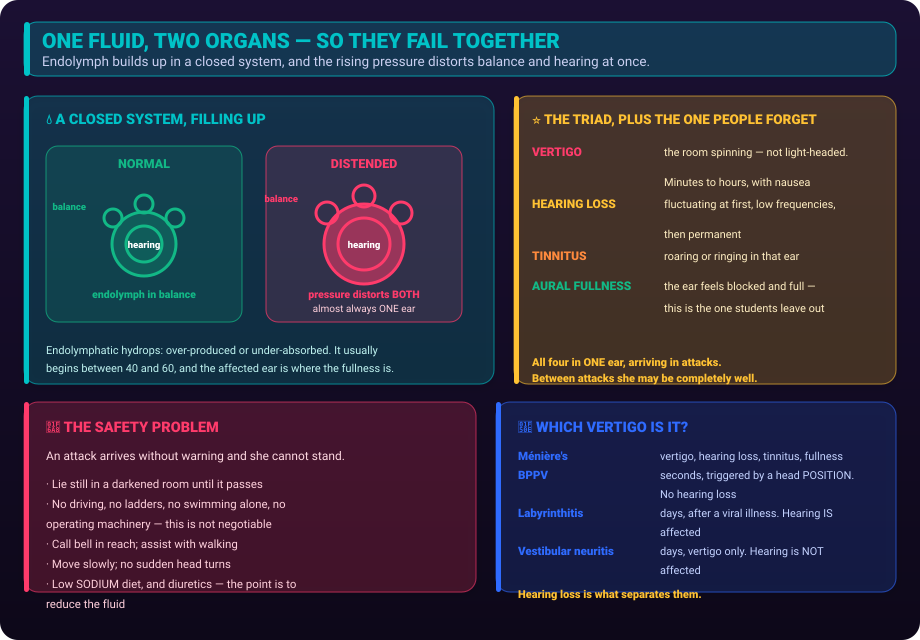

Too much fluid in the inner ear. The triad, the safety problem, and how it differs from the other vertigos.

The inner ear holds a fluid called endolymph inside a closed membranous system. In Ménière’s that fluid builds up — endolymphatic hydrops — and the rising pressure distorts the structures that sense both balance and hearing.
One fluid, two organs. That is why hearing and balance fail together.
Almost always one ear. Unilateral is the rule; the affected ear is where the fullness and the hearing loss are. It usually begins between 40 and 60.
Four features define an attack. Three of them are the classic triad; the fourth, aural fullness, is the one students leave out.
1. Vertigo
The room spinning, not light-headedness. Sudden, severe, lasting 20 minutes to several hours — occasionally up to a day. Comes with nausea, vomiting and nystagmus.
2. Hearing loss
Sensorineural, fluctuating, and it hits the low frequencies first. Early on it comes and goes; over years it becomes permanent.
3. Tinnitus
Roaring, buzzing or ringing in the affected ear. Often louder just before an attack, so it can act as a warning.
4. Aural fullness
A sense of pressure or stuffiness in that ear. Frequently the earliest signal an attack is coming.
Vertigo, tinnitus, hearing loss, fullness — and the attacks come and go with normal spells in between. The episodic pattern is as diagnostic as the symptoms.
| Condition | How long an attack lasts | Hearing | The giveaway |
|---|---|---|---|
| Ménière’s | 20 min – hours | Lost, fluctuating | Tinnitus and aural fullness |
| BPPV | Seconds — under a minute | Normal | Only on head position change; treated with a repositioning manoeuvre |
| Vestibular neuritis | Days, constant | Normal | Often after a viral illness; no hearing loss |
| Labyrinthitis | Days, constant | Lost | Like neuritis plus hearing loss |
| Acoustic neuroma | Constant unsteadiness | Progressive, one-sided | Steadily worsens — it never gets better between times |
Duration sorts them faster than anything else. Seconds → BPPV. Minutes to hours, with hearing loss → Ménière’s. Days → neuritis or labyrinthitis. Never lets up → think tumour.
The priority during an attack is not the vertigo. It is the fall. A sudden, severe spinning attack with no warning is a fall risk with injury attached.
During an attack
Between attacks — what to teach
1500–2000 mg a day, spread evenly. Less salt means less fluid retained in the inner ear. This is the single biggest lifestyle lever.| Purpose | Typical agents | Nursing point |
|---|---|---|
| Reduce fluid | Diuretics (often a thiazide) | Long-term prevention. Monitor potassium and blood pressure. |
| Stop the spinning | Antihistamines — meclizine, dimenhydrinate | Sedating. Fall precautions, no driving. |
| Stop the vomiting | Antiemetics — promethazine, ondansetron | Given during an acute attack. |
| Calm the vestibule | Benzodiazepines, short term | Sedating; short courses only. |
| Severe, refractory | Intratympanic steroid or gentamicin; surgery | Gentamicin is ototoxic by design — it disables the balance organ, at the cost of hearing. |
What to reinforce about the future. Ménière’s is chronic and unpredictable. Attacks may cluster then vanish for months. Hearing in that ear tends to decline over years. Say so honestly — and pair it with the fact that diet and trigger control genuinely reduce how often attacks come.